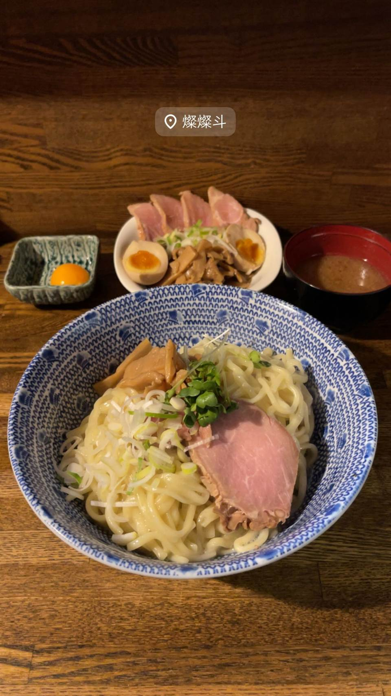

ラーメン · つけ麺 · 東十条
★ また行きたいつけ麺で2位
燦燦斗（さんさんと）
1日2時間半だけの営業、寺子屋仕込みのつけ麺
燦燦斗
東十条「燦燦斗」は、千葉・松戸の名店「寺子屋」出身の店主が2006年9月に開いたラーメン・つけめん・油そばの店。1日わずか2時間半という短い営業時間ながら、食べログ百名店に3年連続選出されるほどの実力店。

TRIVIA
豆知識
- 1日わずか2時間半という短い営業時間ながら、食べログ3.8超え・ラーメンDB全国10位という高評価を誇る
REVIEWS
世間の評判
98.4ラーメンDB3.84食べログ
サラサラでも塩強めのつけ汁
- 自家製の弾力あるピロピロ麺と醤油ダレの香りやコクを評価する声が多い
- 20周年を迎える老舗として根強い人気を保っているという声がある
- 営業時間が短く狙って訪問しないと食べにくい店という声も複数ある
ラーメンデータベース 総合35位・最新 2026-09
| 創業 | 2006年9月創業。 |
|---|---|
| 系譜 | 千葉・松戸の名店「寺子屋」出身の店主が独立して開業。 |
| 看板 | ラーメン、つけめん、油そばの3本柱メニュー |
| こだわり | 豚骨・もみじ（鶏足）・丸鶏を炊いたスープに鯖節・煮干しなど魚介出汁を合わせる。年季の入った製麺機で作る中太多加水の自家製麺。 |
| 掲載・評価 | 食べログ ラーメン百名店に2017〜2019年3年連続選出。ラーメンデータベースで全国10位にランクインしたこともある。 |
| どこから | 23区の外れ・近郊 |
| 行くなら | 夜だけ |
| 営業時間 | 月 休み 火・水 18:00-20:30 木 休み 金〜日 18:00-20:30 |
| 予算 | 夜 ～¥999 |
| 定休日 | 月曜・木曜 |
| 場所 | 東十条 東京都北区中十条3-16-15 |
| メモ | 営業はわずか2時間半（18:00〜20:30ごろ）のみ。東十条駅北口すぐの路地。 |
食べたもの：つけ麺
NEARBY
近い店・同じ系統の店
-
 ★
つけ麺 新小岩
麺屋 一燈
フレンチ出身の店主が42歳で始めた濃厚魚介豚骨つけ麺
昼 ¥1,000～¥1,999 夜 ¥1,000～¥1,999
★
つけ麺 新小岩
麺屋 一燈
フレンチ出身の店主が42歳で始めた濃厚魚介豚骨つけ麺
昼 ¥1,000～¥1,999 夜 ¥1,000～¥1,999
-
 ★
つけ麺 神田
三馬路 東京店（サンマロ）
博多祇園の名店をルーツに持つ、百名店選出の淡麗塩そば
夜 ¥1,000～¥1,999
★
つけ麺 神田
三馬路 東京店（サンマロ）
博多祇園の名店をルーツに持つ、百名店選出の淡麗塩そば
夜 ¥1,000～¥1,999
-
 ★
つけ麺 青葉台駅
らぁ麺 すぎ本
ラーメンの鬼、最後の弟子が作る自家製麺のつけ麺
昼 ¥1,000～¥1,999 夜 ¥1,000～¥1,999
★
つけ麺 青葉台駅
らぁ麺 すぎ本
ラーメンの鬼、最後の弟子が作る自家製麺のつけ麺
昼 ¥1,000～¥1,999 夜 ¥1,000～¥1,999
-
 ★
つけ麺 地下鉄成増
中華そば べんてん
べんてん-とし岡系という系譜を生んだ源流店とされる中華そば
昼 ¥1,000～¥1,999
★
つけ麺 地下鉄成増
中華そば べんてん
べんてん-とし岡系という系譜を生んだ源流店とされる中華そば
昼 ¥1,000～¥1,999
-
 ★
つけ麺 王子
キング製麺
ビブグルマン店の系列、白だしと山椒から選べる2種のスープ
昼 ¥1,000～¥1,999 夜 ¥1,000～¥1,999
★
つけ麺 王子
キング製麺
ビブグルマン店の系列、白だしと山椒から選べる2種のスープ
昼 ¥1,000～¥1,999 夜 ¥1,000～¥1,999
-
 ★
つけ麺 神保町駅
つけそば 神田勝本
銀座の一つ星フレンチシェフが手がける清湯つけそば
昼 ～¥999
★
つけ麺 神保町駅
つけそば 神田勝本
銀座の一つ星フレンチシェフが手がける清湯つけそば
昼 ～¥999
ONSEN & SAUNA